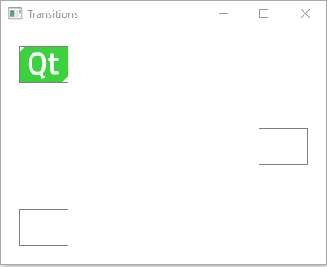
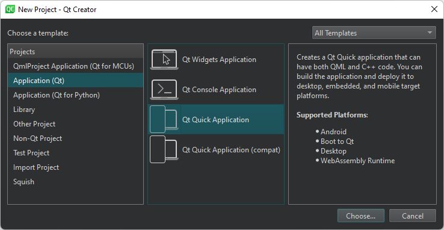
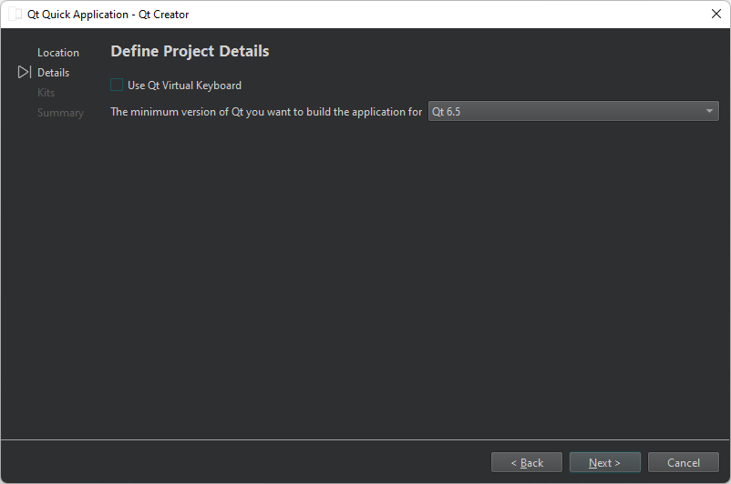
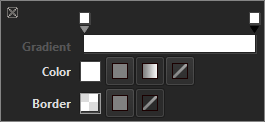
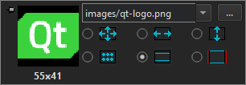
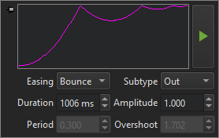

Tutorial: Qt Quick application
How to create a Qt Quick Application in the Edit mode.
This tutorial illustrates basic concepts of Qt Quick. For more information about the UI choices you have, see User Interfaces.
This tutorial describes how to use Qt Creator to implement states and transitions when using Qt 6 as the minimum Qt version and CMake as the build system.
You will use the Edit mode to create an application that moves a Qt logo between three rectangles when you select them.

For more examples, see Qt Quick Examples and Tutorials.
You can use a visual editor to develop Qt Quick applications in Qt Design Studio. For more information, see Qt Design Studio documentation.
Create the project
- Go to File > New Project > Application (Qt) > Qt Quick Application.

- Select Choose to open the Project Location dialog.
- In Name, enter a name for the application. When naming your own projects, keep in mind that you cannot easily rename them later.
- In Create in, enter the path for the project files. You can move project folders later without problems.
- Select Next to open the Define Project Details dialog.

- Select Next to open the Kit Selection dialog.
- Select Qt 6.5 or later kits for the platforms that you want to build the application for. To build applications for mobile devices, select kits also for Android and iOS.
Note: The list shows kits that you specify in Preferences > Kits. For more information, see Add kits and Kits.
- Select Next to open the Project Management dialog.
- Review the project settings, and select Finish (or Done on macOS) to create the project.
Qt Creator generates a component file, Main.qml, and opens it in the Edit mode.
Deploy applications
The main view of the application displays a Qt logo inside a rectangle in the top left corner of the view and two empty rectangles.
For the image to appear when you run the application, you must specify it as a resource in the RESOURCES section of CMakeLists.txt file that the wizard created for you:
qt_add_qml_module(apptransitions
URI transitions
VERSION 1.0
QML_FILES Main.qml Page.qml
RESOURCES qt-logo.png
)
Create a custom QML type
Because the Window QML type requires that you add states into child components, use the wizard to create a custom QML type called Page that you refer to from Main.qml.
To create a custom QML type:
- Go to File > New File.
- Select Qt > QML File (Qt Quick 2).
- Select Choose to open the Location dialog.
- In File name, enter a name for the custom QML type: Page.
- Select Next to open the Project Management dialog.
- Select Finish to create
Page.qml.
Qt Creator opens Page.qml in the Edit mode. It has a root item of the type Item. Replace it with a Rectangle type. Give the type the ID page, anchor it to the parent item on all sides, and set its color to white:
import QtQuick Rectangle { id: page anchors.fill: parent color: "#ffffff"
When you start typing the QML type name, Qt Creator suggests available types and properties to complete the code.
Select the light bulb icon next to the type name to open a toolbar that you can use to specify rectangle properties, such as color, transparency, and gradients.

Next, add an Image type with qt-logo.png as the source. You can also use any other image or a component. Position the image in the top-left corner of the rectangle:
Image {
id: icon
x: 20
y: 20
source: "qt-logo.png"
}
Use a toolbar for images to specify image properties, such as source file and fill mode.

Now, create the rectangles that the image will move between. Their size should match the image size and they should be transparent, so that the image is visible. Set the border color to light gray to make the rectangles visible:
Rectangle {
id: topLeftRect
width: 55
height: 41
color: "#00ffffff"
border.color: "#808080"
Anchor the rectangles to their parent to position them in its top-left and bottom-left corners, as well as the vertical center of its right edge. The following code snippet anchors a rectangle to the top-left corner of its parent:
anchors.left: parent.left
anchors.top: parent.top
anchors.leftMargin: 20
anchors.topMargin: 20
Add a MouseArea type to make the rectangle clickable by users:
MouseArea {
id: mouseArea
anchors.fill: parent
To check your code, compare it with the Page.qml example file.
Next, make the image move between the rectangles when users click them by adding states and by connecting mouse clicks to state changes.
Connect mouse clicks to state changes
To make the image move between the rectangles when users select them, add states to the Page component where you change the values of the x and y properties of icon to match those of the middle right and top left rectangles. To make sure that the image stays within the rectangle when the view is scaled on different sizes of screens, bind the values of the x and y properties of icon to those of the rectangles:
...
states: [
State {
name: "State1"
},
State {
name: "State2"
PropertyChanges {
target: icon
x: middleRightRect.x
y: middleRightRect.y
}
},
State {
name: "State3"
PropertyChanges {
target: icon
x: bottomLeftRect.x
y: bottomLeftRect.y
}
}
]
Then, connect the onClicked signals of the mouse areas to the state changes:
Connections {
target: mouseArea
function onClicked()
{
page.state = "State1"
}
Because you develop with Qt 6, you must specify the connections as functions.
Add Page to the main view
Open Main.qml for editing and add an instance of the Page custom component to it:
import QtQuick Window { width: 640 height: 480 visible: true title: qsTr("Transitions") Page { id: page anchors.fill: parent } }
Select Ctrl+R to run the application, and then select the rectangles to move the Qt logo from one rectangle to another.
Animate transitions
Create transitions to apply animation to the image. For example, the image bounces back when it moves to middleRightRect and eases into bottomLeftRect.
Specify transitions for switching from each state to the other two states:
transitions: [
Transition {
id: toState1
ParallelAnimation {
SequentialAnimation {
PauseAnimation {
duration: 0
}
PropertyAnimation {
target: icon
property: "y"
duration: 200
}
}
SequentialAnimation {
PauseAnimation {
duration: 0
}
PropertyAnimation {
target: icon
property: "x"
duration: 200
}
}
}
to: "State1"
from: "State2,State3"
},
Change the easing curve type for transitions to State2 from linear to Easing.OutBounce to create the bounce effect:
Transition {
id: toState2
ParallelAnimation {
SequentialAnimation {
PauseAnimation {
duration: 0
}
PropertyAnimation {
target: icon
property: "y"
easing.type: Easing.OutBounce
duration: 1006
}
}
SequentialAnimation {
PauseAnimation {
duration: 0
}
PropertyAnimation {
target: icon
property: "x"
easing.type: Easing.OutBounce
duration: 1006
}
}
}
to: "State2"
from: "State1,State3"
},
Note: Use a toolbar for animations to specify the easing curve type and animation duration.

Then, change the easing curve type for transitions to State2 from linear to Easing.InOutQuad to create the easing effect:
Transition {
id: toState3
ParallelAnimation {
SequentialAnimation {
PauseAnimation {
duration: 0
}
PropertyAnimation {
target: icon
property: "y"
easing.type: Easing.InOutQuad
duration: 2000
}
}
SequentialAnimation {
PauseAnimation {
duration: 0
}
PropertyAnimation {
target: icon
property: "x"
easing.type: Easing.InOutQuad
duration: 2000
}
}
}
to: "State3"
from: "State1,State2"
}
]
}
Select Ctrl+R to run the application, and then select the rectangles to view the animated transitions.
Files:
Images:
{kind=link}